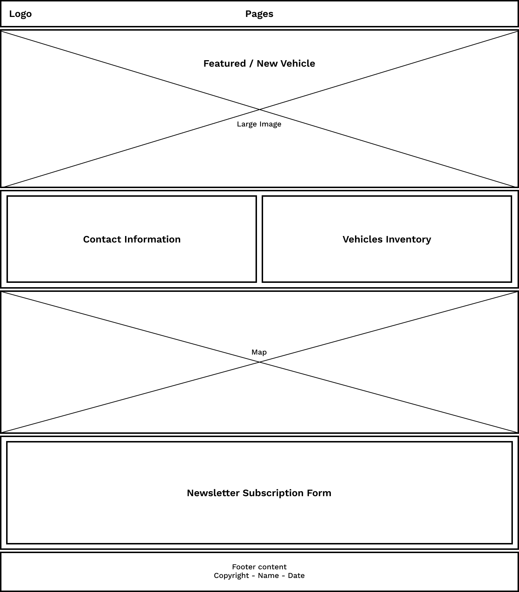
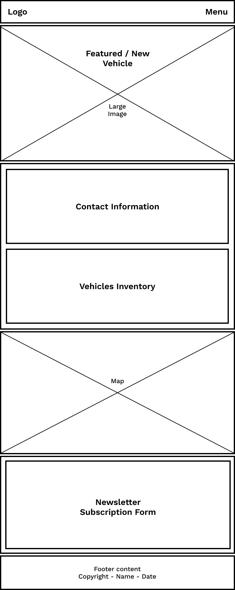

Site Name
Parilli
The name "Parilli" was chosen because it represents my ancestors and gives the business a personal identity.
Site Purpose
The purpose of the Parilli website is to sell luxury vehicles. The site will show information about each vehicle such as its features, images and pricing, and also give customers an easy way to contact the company for more information.
Scenarios
- What luxury vehicles are currently available at Parilli?
- How can I contact Parilli to schedule a visit?
Color Schema
Background Color - #FFFFFF | Will be used for the background to make the website look clean.
Primary Color - #3E6AE1 | Will be used for the main elements and important buttons.
Secondary Color - #000000 | Will be used for text, buttons and accents.
Typography
Work Sans | Will be used in the entire website, with different font weights depending on the importance of the text.
Wireframes
Desktop Wireframe:

Mobile Wireframe:
